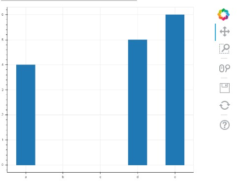

Installing bokeh 安裝背景虛化 <<
Previous Next >> 心得
Using bokeh 使用散景
The basic idea of any plotting package is simple:
Load the data
Display the data
So the first thing you have to do is prepare some data. Usually, when you are plotting data you have two axes, or groups of data, an x-axis (or horizontal axis) and a y-axis (or vertical axis). The x variable is your input (independent) variable and the y variable is your output (dependent) variable.
For use in bokeh, your data should be loaded into two separate lists, one for the x-axis and one for the y-axis. The basic format of a bokeh (in this case histogram) looks like this:
# need to import at least 3 things to make your
# bokeh plots work
from bokeh.plotting import figure, show, output_file
# we specify an HTML file where the output will go
output_file("plot.html")
# load our x and y data
x = [10, 20, 30]
y = [4, 5, 6]
# create a figure
p = figure()
# create a histogram
p.vbar(x=x, top=y, width=0.5)
# render (show) the plot
show(p)
The way bokeh outputs plots is really cool: when you run a piece of bokeh code, it outputs the result into an HTML file that you can then save and display in a web browser on it’s own. After you run this segment on top, it will automatically open a web browser and show you a plot.
One awesome feature of Bokeh is that it gives you a toolbar you can use to play with the graph - moving it around, zooming out, saving it, etc. Plus, you can put it directly into am HTML page!
It will look something like this:
任何繪圖程序包的基本思想都很簡單：
加載數據
顯示數據
因此，您要做的第一件事是準備一些數據。通常，在繪製數據時，您有兩個軸或一組數據，分別是x軸（或水平軸）和y軸（或垂直軸）。 x變量是您的輸入（獨立）變量，y變量是您的輸出（獨立）變量。
為了在bokeh中使用，您的數據應加載到兩個單獨的列表中，一個用於x軸，一個用於y軸。散景的基本格式（在本例中為直方圖）如下所示：
＃需要至少導入3件事才能使您的
＃散景圖工作
來自bokeh.plotting導入圖，顯示，output_file
＃我們指定一個HTML文件，輸出將在其中
output_file（“ plot.html”）
＃加載我們的x和y數據
x = [10，20，30]
y = [4，5，6]
＃創建一個人物
p =數字（）
＃創建直方圖
p.vbar（x = x，top = y，寬度= 0.5）
＃渲染（顯示）情節
顯示（p）
散景輸出圖的方式真的很酷：運行一段散景代碼時，它將結果輸出到HTML文件中，然後您可以將其保存並單獨顯示在網絡瀏覽器中。在頂部運行此段後，它將自動打開Web瀏覽器並顯示圖。
Bokeh的一項令人敬畏的功能是，它為您提供了一個可用於處理圖形的工具欄-進行移動，縮放，保存等。此外，您可以將其直接放入HTML頁面！
它看起來像這樣：

The example above works when x is a numerical value. But, in the exercise, we are dealing with months, which is called a “categorical” variable (i.e. it belongs to a category, and is not continuous). To make sure bokeh draws the axis correctly, you need to specify a special call to figure() to pass an x_range, like so:
from bokeh.plotting import figure, show, output_file
output_file("plot.html")
x_categories = ["a", "b", "c", "d", "e"]
x = ["a", "d", "e"]
y = [4, 5, 6]
p = figure(x_range=x_categories)
p.vbar(x=x, top=y, width=0.5)
show(p)
Here’s what this one looks like:
當x是數字值時，以上示例適用。但是，在練習中，我們要處理幾個月，這被稱為“類別”變量（即，它屬於一個類別，並且不是連續的）。為了確保bokeh正確繪製軸，您需要指定對fig（）的特殊調用以傳遞x_range，如下所示：
來自bokeh.plotting導入圖，顯示，output_file
output_file（“ plot.html”）
x_categories = [“ a”，“ b”，“ c”，“ d”，“ e”]
x = [“ a”，“ d”，“ e”]
y = [4，5，6]
p =圖形（x_range = x_categories）
p.vbar（x = x，top = y，寬度= 0.5）
顯示（p）
這是這樣的：

There are also extra commands and arguments you can pass to bokeh to display an title for the plot, for each of the axis, for the color of the bars, and so on.
If you want to dive deep into that documentation, check out these resources:
Bar plots / histograms
Categorical axes
Everything to do with styling plots
Basic plotting for other types of graphs
If you want to add more flair to your histogram from this exercise, there are many resources on the web to help you out!
Happy coding!
您還可以傳遞給bokeh額外的命令和參數，以顯示繪圖的標題，每個軸的標題，條形的顏色等等。
如果您想深入了解該文檔，請查看以下資源：
條形圖/直方圖
分類軸
與樣式圖有關的一切
其他類型圖形的基本繪圖
如果您想通過此練習為直方圖增加更多個性，網絡上有很多資源可以幫助您！
祝您編碼愉快！
Installing bokeh 安裝背景虛化 <<
Previous Next >> 心得